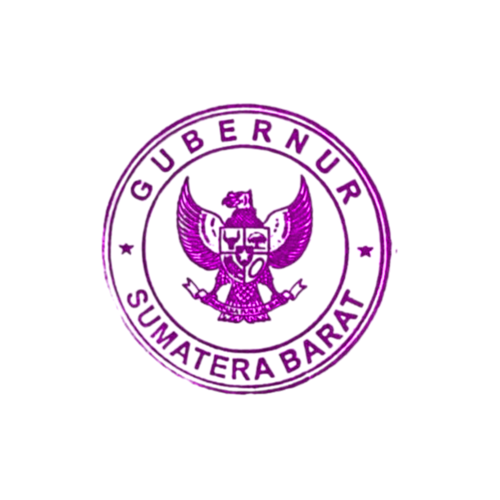
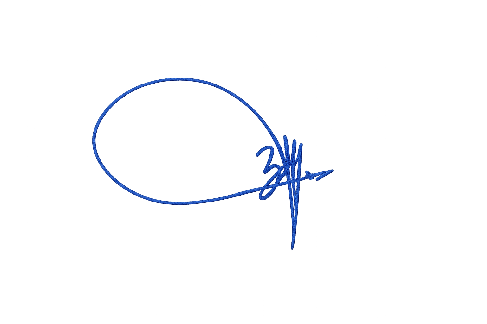

Pemerintah Provinsi Sumatera Barat
Memberikan Penghargaan dan Ucapan Terima Kasih Kepada :
Nama
:
NIP/NRP
:
Instansi
:
Atas dedikasi waktu dan energi yang diberikan, ini merupakan bagian penting
dalam Penanganan Darurat Bencana Alam Hidrometeorogi Sumatera Barat
dari tanggal 25 November s.d 22 Desember 2025

Padang, 31 Desember 2025
Gubernur Sumatera Barat

Mahyeldi